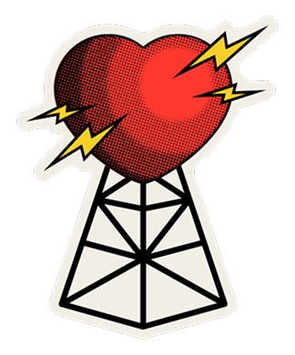
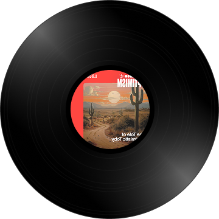
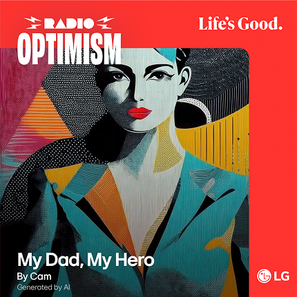
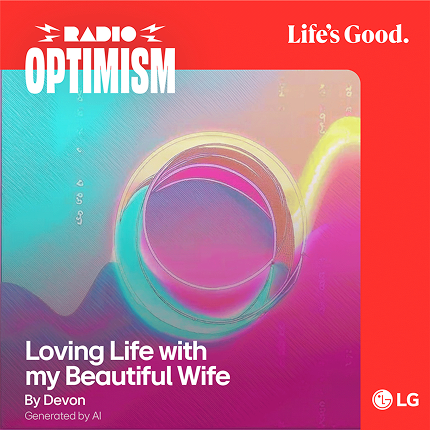
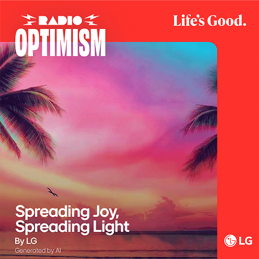

Créez des chansons et répandez la joie avec Radio Optimism


Défiler vers le bas
Chaque jour, nous faisons défiler et glisser l’écran, et tapons sur des « j’aime ».
Mais établissons-nous vraiment des liens avec les autres?
Ce dont nous avons besoin, ce sont peut-être des relations de cœur à cœur.


C’est pourquoi nous transmettons notre message « La vie est belle »
au moyen du langage universel de la musique.
Créez une mélodie pour la personne qui vous est chère avec Radio Optimism de LG.
C’est facile! Pensez à quelqu’un de spécial et écrivez quelques mots à son sujet.
Une chanson unique sera ensuite créée, prête à être partagée avec un sourire.


Composer une chanson sincère pour quelqu’un et recevoir un morceau d’un être cher sont des moments authentiques qui nous permettent de réaffirmer que La vie est belle.
Comment créer votre chanson
Il suffit d’appuyer sur quelques touches – c’est aussi simple que cela.
 Choisissez votre style.
Choisissez votre style.
Maintenant, choisissez votre sonorité. Choisissez un genre – du hip-hop à la K-pop – et un style qui correspond à votre histoire.
 Votre chanson est prête!
Votre chanson est prête!
Envoyez-la à quelqu’un ㅡ et laissez-la jouer sur Radio Optimism.
Des chansons faites pour vous











LA STATION DE LA DÉDICACE 24 h/24, 7 j/7
LA STATION DE LA DÉDICACE 24 h/24, 7 j/7
Créez votre chanson maintenant.
Créez votre chanson maintenant.